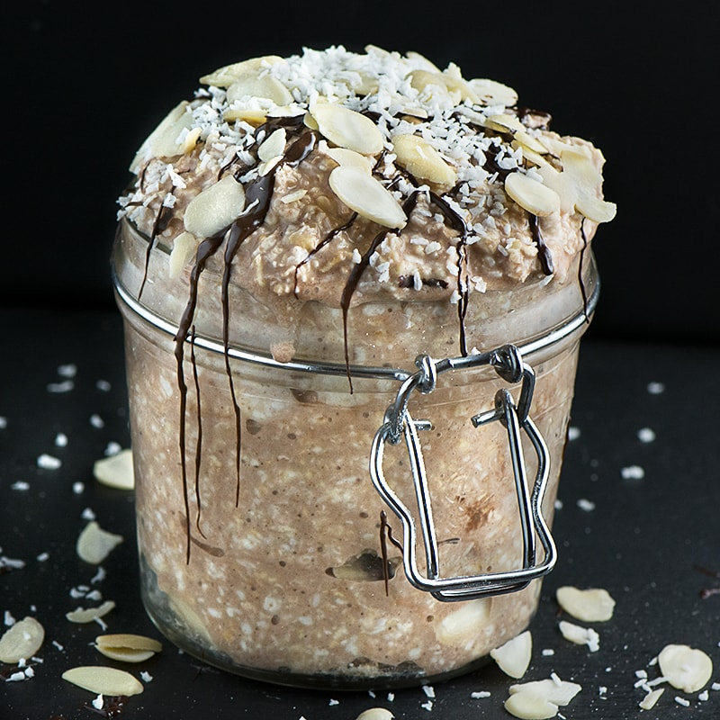

Chocolate Coconut Overnight Oats

A yummy breakfast that is healthy but doesn't leave you feeling deprived.
these no-cook coconut overnight oats will be creamy by morning and make breakfast prep time non-existent.
Put all ingredients in a 12-ounce mason jar and vigorously shake to make preparation a breeze!
Ingredients
- 1 cup chocolate-flavored almond milk
- ¾ cup old-fashioned rolled oats (such a Quaker®)
- 1 tablespoon chia seeds
- 1 tablespoon packed shredded sweetened coconut
- 1 tablespoon maple syrup
- 1 tablespoon unsweetened cocoa powder
- 1 splash vanilla extract
Directions
- Mix almond milk, oats, chia seeds, coconut, maple syrup, cocoa powder, and vanilla extract in a 12-ounce mason jar.
- Cover and refrigerate, 8 hours to overnight. Stir and serve cold.